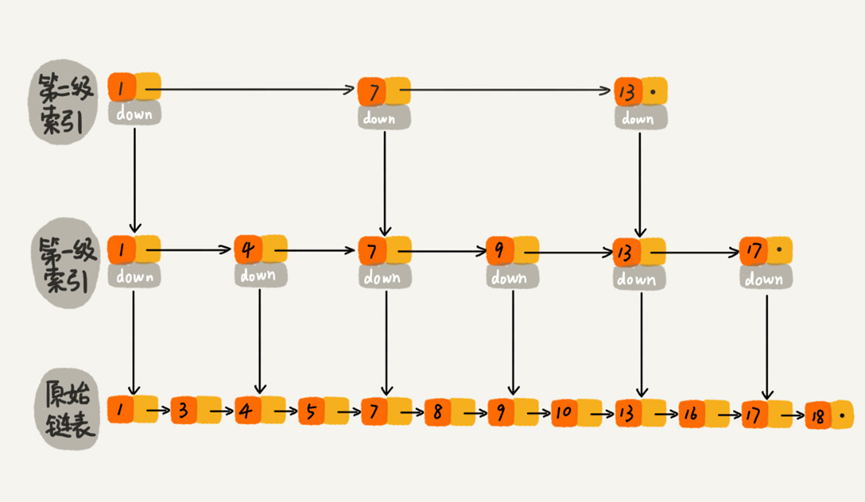
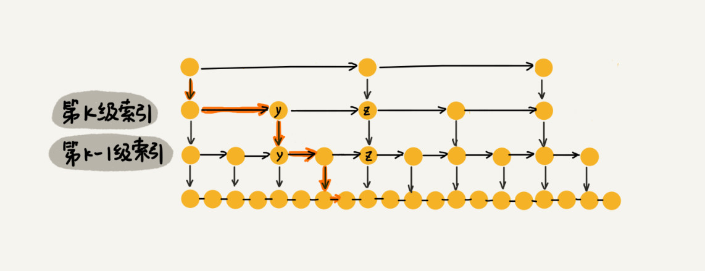
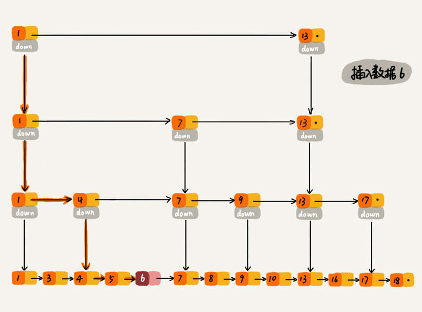

一、什么是跳表 ？
为一个值有序的链表建立多级索引，比如每2个节点提取一个节点到上一级，我们把抽出来的那一级叫做索引或索引层。down表示down指针，指向下一级节点。以此类推，对于节点数为n的链表，大约可以建立$log2n-1$级索引。

二、跳表的时间复杂度？
计算跳表的高度n个节点，每2个节点抽取抽出一个节点作为上一级索引的节点，那第1级索引的节点个数大约是n/2，第2级索引的节点个数大约是n/4，依次类推，第k级索引的节点个数就是n/(2^k)。h级别，最高级的索引有2个节点，则有n/(2^h)=2，得出$h=log2n-1$，包含原始链表这一层，整个跳表的高度就是$log2n$。
计算跳表的时间复杂度m个节点，那在跳表中查询一个数据的时间复杂度就是$O(m*logn)$。那这个m是多少呢？x，在第k级索引中，我们遍历到y节点之后，发现x大于y，小于后面的节点z，所以我们通过y的down指针，从第k级下降到第k-1级索引。k-1级索引中，y和z之间只有3个节点（包含y和z），所以，我们在k-1级索引中最多只需要遍历3个节点，以此类推，每一级索引都最多只需要遍历3个节点。所以m=3。
三、跳表的空间复杂度及如何优化？
计算索引的节点总数n个节点，每2个节点抽取抽出一个节点作为上一级索引的节点，那每一级索引的节点数分别为：n/2，n/4，n/8，…，8，4，2，等比数列求和n-1，所以跳表的空间复杂度为$O(n)$。
如何优化时间复杂度n个节点，每3或5个节点抽取抽出一个节点作为上一级索引的节点，那每一级索引的节点数分别为（以3为例）：n/3，n/9，n/27，…，27，9，3，1，等比数列求和n/2，所以跳表的空间复杂度为$O(n)$，和每2个节点抽取一次相比，时间复杂度要低不少。
四、高效的动态插入和删除
跳表本质上就是链表，所以仅插作，插入和删除操时间复杂度就为$O(1)$，但在实际情况中，要插入或删除某个节点，需要先查找到指定位置，而这个查找操作比较费时，但在跳表中这个查找操作的时间复杂度是$O(logn)$，所以，跳表的插入和删除操作的是时间复杂度也是$O(logn)$。

五、跳表索引动态更新
当往跳表中插入数据的时候，可以选择同时将这个数据插入到部分索引层中，那么如何选择这个索引层呢？K，那就可以把这个节点添加到第1级到第K级索引中。
六、思考
为什么 Redis 要用跳表来实现有序集合，而不是红黑树？
Redis 中的有序集合是通过跳表来实现的，严格点讲，其实还用到了散列表。Redis 的开发手册，就会发现，Redis 中的有序集合支持的核心操作主要有下面这几个：[100, 356] 之间的数据）；Redis 之所以用跳表来实现有序集合，还有其他原因，比如，跳表更容易代码实现。Map 类型都是通过红黑树来实现的。
如果每三个或者五个结点提取一个结点作为上级索引，对应的在跳表中查询数据的时间复杂度是多少呢？
如果每三个或者五个节点提取一个节点作为上级索引，那么对应的查询数据时间复杂度，也还是$O(logn)$。5 个节点提取，那么最高一层有 5 个节点，而跳表高度为 $log5n$，每层最多需要查找 5 个节点，即 $O(mlogn)$ 中的 m = 5，最终，时间复杂度为 $O(logn)$。
跳表代码实现 1 2 3 4 5 6 7 8 9 10 11 12 13 14 15 16 17 18 19 20 21 22 23 24 25 26 27 28 29 30 31 32 33 34 35 36 37 38 39 40 41 42 43 44 45 46 47 48 49 50 51 52 53 54 55 56 57 58 59 60 61 62 63 64 65 66 67 68 69 70 71 72 73 74 75 76 77 78 79 80 81 82 83 84 85 86 87 88 89 90 91 92 93 94 95 96 97 98 99 100 101 102 103 104 105 106 107 108 109 110 111 112 113 114 115 116 117 118 119 120 121 122 package skiplist;import java.util.Random;public class SkipList private static final int MAX_LEVEL = 16 ; private int levelCount = 1 ; private Node head = new Node(); private Random r = new Random(); public Node find (int value) Node p = head; for (int i = levelCount - 1 ; i >= 0 ; --i) { while (p.forwards[i] != null && p.forwards[i].data < value) { p = p.forwards[i]; } } if (p.forwards[0 ] != null && p.forwards[0 ].data == value) { return p.forwards[0 ]; } else { return null ; } } public void insert (int value) int level = randomLevel(); Node newNode = new Node(); newNode.data = value; newNode.maxLevel = level; Node update[] = new Node[level]; for (int i = 0 ; i < level; ++i) { update[i] = head; } Node p = head; for (int i = level - 1 ; i >= 0 ; --i) { while (p.forwards[i] != null && p.forwards[i].data < value) { p = p.forwards[i]; } update[i] = p; } for (int i = 0 ; i < level; ++i) { newNode.forwards[i] = update[i].forwards[i]; update[i].forwards[i] = newNode; } if (levelCount < level) levelCount = level; } public void delete (int value) Node[] update = new Node[levelCount]; Node p = head; for (int i = levelCount - 1 ; i >= 0 ; --i) { while (p.forwards[i] != null && p.forwards[i].data < value) { p = p.forwards[i]; } update[i] = p; } if (p.forwards[0 ] != null && p.forwards[0 ].data == value) { for (int i = levelCount - 1 ; i >= 0 ; --i) { if (update[i].forwards[i] != null && update[i].forwards[i].data == value) { update[i].forwards[i] = update[i].forwards[i].forwards[i]; } } } } private int randomLevel () int level = 1 ; for (int i = 1 ; i < MAX_LEVEL; ++i) { if (r.nextInt() % 2 == 1 ) { level++; } } return level; } public void printAll () Node p = head; while (p.forwards[0 ] != null ) { System.out.print(p.forwards[0 ] + " " ); p = p.forwards[0 ]; } System.out.println(); } public class Node private int data = -1 ; private Node forwards[] = new Node[MAX_LEVEL]; private int maxLevel = 0 ; @Override public String toString () StringBuilder builder = new StringBuilder(); builder.append("{ data: " ); builder.append(data); builder.append("; levels: " ); builder.append(maxLevel); builder.append(" }" ); return builder.toString(); } } }


评论加载中